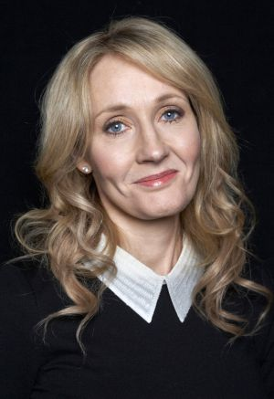

Harry Potter es una serie de novelas fantásticas escrita por
la autora británica J. K. Rowling,
en la que se describen las
aventuras del joven aprendiz de magia y hechicería Harry Potter
y sus amigos Hermione Granger y Ron Weasley, durante los años
que pasan en el Colegio Hogwarts de Magia y Hechicería.
Conoce el resto de libros del mundo mágico creado por
J. K. Rowling,
dentro de esta sección encontrarás otros
libros como el famoso "Animales Fantásticos y cómo encontrarlos",
libros relacionados con Quidditch...
J. K. Rowling

Joanne Rowling (Yate, 31 de julio de 1965), quien escribe bajo
los seudónimos J. K. Rowling2 y Robert Galbraith, es una escritora,
productora de cine y guionista británica, conocida por ser la autora
de la serie de libros Harry Potter, que han superado los quinientos
millones de ejemplares vendidos.
Antes de publicar la primera novela, la editorial Bloomsbury temió
que los lectores más jóvenes tuvieran reticencia a comprar libros
escritos por una mujer y le pidieron que utilizase dos iniciales y
no su nombre de pila.8 Como no tiene segundo nombre, eligió la letra
K como su segunda inicial en honor a su abuela paterna Kathleen.
El nombre Kathleen nunca ha sido parte de su verdadero nombre.
Después de su matrimonio, a menudo utiliza el nombre Joanne Murray
cuando lleva a cabo asuntos privados. Se llama a sí misma Jo,
diciendo:
Nadie me llamaba Joanne cuando era niña, a menos que
estuviesen enfadados conmigo